朝颜
很久没有见到过那么简单干净的女孩．
最先让我想起的是日本的女孩．似乎在日常拍照的时候，她都不会无拘无束地露出一口牙齿，笑容就流露出来，然后摆出土土的V字手势，这样的照片感觉在国内比较少见了．更多的是流行一脸cool cool的小姐姐造型，侧着头摆pose，目光也冷冷的，或者，看不到目光……
第一感觉是：你，好温暖．
知道你也在佛山，突然有点激动起来．我们，能有故事么？
今天突然就聊了起来，让我有点小兴奋．
聊到工作时候，突然有点庆幸换了工作进了医疗，让我能接上话来……
想起你说通过后能不能发一下照片，我平时基本不怎么拍照片，便找了一张勉强能拿出手的发给了你，说实话，心里很忐忑……还好，不是在家里拍的，在家里我基本不梳头……
当你突然主动说能不能加微信的时候，我突然一怔……从第一眼见你的时候，我觉得眼里心里突然充实起来，再也容不下其它．但是，当这一切将开始要萌芽的时候，我却突然变得不自信起来．我害怕你会嫌弃我老……我自己感觉自己是个很简单的人，年龄，只是一个数字．我也不介意别人怎样看我自己，但我害怕错过一个人．纠结好一阵子，我还是说明了情况．我问我自己：“你想干嘛？”．问完之后我就肯定了答案，我的动机只有一个，我想和这个女生有故事．
最后我终于加上了这个女孩的微信．
今天我早早就起来，想和你说话．和你聊了好多好多，聊起兴趣，你也喜欢跑步啊……我，觉得你也是个阳光的小姐姐，很温暖．聊起日语，平时话题不多的我，终于能好好地接上了话……
我说，我像一只猫，其实是以前的朋友这样和我说的．猫，平时就一副高冷的样子，有人过来撩一下，就玩闹起来．大概我也是这样子的吧．遇到你，我的话变得多了起来．
你说要考MBA，我第一反应就是，这孩子……这小医生怎么会去考MBA?!难道家里开公司……让我感觉到的是这个孩子好懂事，早早地就把家里的事操起心来……
你问我怎样看待爱情和婚姻，我第一感觉，好直接！可能我的思想也太简单了，我想期待的是，每一个选择和努力，它都有个结果，尽管不一定是个好结果．现在的我，好像找一个人来分享我见过的事，听听过的歌，带她走我走过的路，一起去看这个未知的世界，里面有酸甜苦辣，我会牵着她和她一起品尝．不知道这是不是爱情，但就把婚姻当作这一切的结果吧．而眼前，我想为这一个选择（你，可能是“我们”）而努力．
今晚，我觉得离你好近．
今天刷知乎看到一个问题问“男生喜欢你会一整天不找你吗？”第一反应就是，我不会！但是，我不知道你怎么想．我会不会说了太多？来得太快，也去得太快？而你，会来找我吗？
不会．
也许他正在网上搜索：女生喜欢你会一整天不找你吗？他看到的答案，应该也是不会．
所以他在等，他希望那个他喜欢的女孩能够主动跟他说一句话，哪怕是一句“嘿”，也足以让他欣喜若狂．
……
我感觉自己被看穿了一样．我“这个年纪”的人，说出来怕也会被人笑吧……表现得像小男生一样．一句话，心里就小鹿乱撞；一眼，就想好了一生怎么过．
离你我说完的最后一句话，已经过去了24小时，说实话，我有点小失望．
明日を描くことを止めないで……
— 明日への手紙
一天多．起来就忍不住想给你发信息．
聊了起来才想起你要刷题，想起以前我也有过那么自律的日子．每6点就起来，静悄悄地离开宿舍，享受每天的第一抹阳光，享受空荡荡的饭堂，然后就在图书馆开始完整的一天，一天……
聊起日剧，又想起学习日语的日子，那时候可能是真的 喜欢 吧．自己上网把视频下载下来，一节又一节地看．后来觉得听不到现实里的人说日语，心里总是不踏实．于是，就厚着脸皮去大一那里听了一学期．每次都是悄悄来到自己坐在后排，悄悄离去……大概是心高气傲，占便宜心里美滋滋的．然而，因为学日语的人实在太少了，日语1班就22个人，课室也就是个只有5排的小课室．所谓的最后一排，也正在老师的眼皮底下．
直到有一天，因为无人可问，我实在想请教老师个问题．我到现在还记得她和我说的第一句话是怎样的．“😄你来听课也不先来跟我打声招呼？”微笑又夹杂着一丝不满，当然我知道那只是一句玩笑，那一瞬间我甚至觉得有一点稚气．我尴尬地笑了一下．她就问我有什么问题要问，一下就聊了起来．那天开始，或许我就成了她的为数不多的学生之一，甚至试卷也会给我发一份．也从那一天开始，不知道怎么的我就和1班里的学习搭起话来．至少，在我来“偷听”第一节课之前，我没有想过会这样．我习惯独来独往，但人有些时候总得习惯群居，或许这也才是语言存在的意义．
下午4点半，我会去饭堂吃饭，因为自由，我可以选择自己的吃饭时间．而4点半，阿姨捧出来的鱼是新鲜，热呼呼的．对了，我喜欢吃鱼．蒸的，蘸上最普通的酱油，实在好吃．晚饭吃好，我会自己来到操场观众席上，发个三五分钟呆，看着操场里来来回回的人们，有慢跑，有散步，偶尔有一两个熊孩子突然冲进来，突然就热闹起来……观众席的背后是篮球场，汗水和青春．我喜欢看别人怎样生活．这个时候，阳光也正好晒在观众席上．短暂的发呆之后，我就会拿出《新编日语》和耳机，一个人跟着录音一遍又一遍地读了起来．自我感觉背书能力确实不怎样的，也就只能多读补补……在观众席上面，无论读多大声，都不会有人听到，因为会被四周生活的气息所掩盖．即使脸皮薄如我，也不会害羞和尴尬．空荡的观众席，更像我自己的舞台．这应该是我一个人所能感受到的，最快乐的时刻之一了．伴随着夜幕降临，我会满足地收好课本，听着歌散步回宿舍，怕不是想温存这一刻吧．
或许这就是 喜欢 的力量．
刘老师，
您好！我是2013年在13级日语1班旁听过的那个研究生黄嘉健，不知道您是否还记得我？
去年12月我参加了N1的考试，今天查成绩虽然也只是低空飘过，但总算终于可以跟别人说我日语算是入了门．查完成绩的瞬间，我最想把这一份喜悦分享给的人的就是您．
那个时候，虽然我只每个每周只有半天的时间去听课，不过，正是那半天，让我有一坚持下去的理由，它给了我认识学习语言最重要的东西之一，就是氛围．我想起了我学习五笔打字的过程．初中的时候开始，我就想学五笔了，然而，最后我学会的时候已经是大三．无数次字根还没有背完，或者以每秒10个字不到的速度一个一个字敲的时候，我就想放弃了．直到大三时候的一个契机，我才坚持了下来．于我的日语学习来说，能够跟老师你学习，就是这样一个美好的契机．我感受得到，老师也把我当成了日语1班的一份子．而我早已当了老师您是我的启蒙老师:-)
那段时间，可以说是我(工作后)回来学校后最认真上课的日子了．虽然由于自己也有好几门的课程，日语学习的整个过程一直处于落后的状态，连单词也没怎么背，但至少我没有放弃．我还想过要去听口语课，无奈当时水平还跟不太上，所以最后迫自己放弃了．直到研二的下学期开始有自己可以支配的时间，我才认真地几本教材翻了几翻．我非常明白自己并非科班出身，日语对我来说最初也只是兴趣，而且我也不想只做只会考试的机器．所以，在开始认真学的那段时间，除了课本的学习，也会看看《一番日本语》，也会看看日剧背背台词，看看NHK Easy等，也知道了lang-8.com等很多有效的资源．慢慢地，直到我去年国庆回来开始准备考N1的时候，我发现自己已经可以从用渣渣的日中辞典到基本无障碍地使用新明解和大辞林．在这个过程，也认识了不少日本的朋友．有一位桥本先生，每次过来日本都会找我吃饭，他说等我找到了工作就要我请了:-)
去年12月24日，就是圣诞前夕，我还参加了日本协会的日语歌唱大赛，虽然只是打酱油．因为想到毕业之际，我用一个月时间苦练了いきものがかり的《YELL》这首在日本红得不行的毕业歌．那天晚上，是我第一次在这么多人面前说日语，我感谢了您和日语1班的小伙伴们．碰巧的是，那天的第二她们就要交老师你报置的论文了，所以只有欢欢、小红、智颖和依玲等几个人来了看．小红还是我上台最后一分钟才跑来的，上去前的一瞬间看到了她，激动得无以言表．总算，在毕业以前完了自己一个心愿．
在近半年认真学习的过程里，我发现自己的输入量总算跟得上了，在以后的日子里，我会尽量加强我的输出水平，包括写作和口语．如果遇到困难需要请教老师的时候，希望老师可以像当时那样，给我指点．
我的语文水平跟我日语一样，还不怎样啊哈哈，一不小心就话痨了，就是数学还算靠谱．不过，这就是我最想对老师您说的话，谢谢您．
最后是勉勉强强的成绩单 :-)
以及去年和桥本先生的合照:-)
黄嘉健
2016.01.27
黄san
首先祝贺你N1顺利通过！也谢谢你专门通知我．
你参加卡拉OK比赛的事情，第二天就有我带的大二的学生专门跑过来告诉我了．很开心！
每年都有来旁听的学生，不过能坚持下来的还真不多，也会有这样那样的原因，偶尔“劝退”的．很佩服你的毅力与坚持．
希望日语能为你今后发展助力！
提前预祝：新年快乐！
刘伟
2016年1月27日
我一直好奇，该怎样称呼你比较好……感觉叫全名不是很好．可能条件反射，最先想起的就是リカ……感觉好顺口……不过日文的リカ对应着好多词……理科、梨花、里香、梨香……自然而然的就想起大小姐絵梨花．第一次看到的时候觉得她有点像堀北真希……也可能是我脸盲．就是，你的笑颜，跟她的一样好看，就很自然和治愈吧．
我想，或期待，你跟你在我聊天列表里的名字一样，变得唯一．
😌😌😌
我回想起来，我喜欢的过的人貌似都不怎么化妆．我也比较难理解为啥多数女生都喜欢化妆……真实和自然，多好．说实话，有些长得不怎么好看的日本女生，她们拍照的时候也喜欢露齿笑，外加土土的V字手势，感觉比现在网红、小姐姐都要好看得多．然后，在日本长得挺一般，也能当偶像，也有人为她们欢呼喝彩．
人それぞれ．
算了一下，上一家公司的老板，我已经认识了10年．亦师亦友，我大概在他的身上才第一次感受到．他欣赏公司里的每一个人，坚信着每一个公司里的人都着发光点，然后又有共同信念，才走到一起．我觉得他太理想，但是，我的阅历无法理解一个华尔街里奋斗过10多年，公司破过产，在各种世界多少强里战斗过，创过业的人的看人的想法．他能看出我的弱点，直击我内心最脆弱的地方，但又不会直接点破，给过我最多的就是鼓励和信任．我在他面前哭过，两次吧……但我也不会有丝毫不安，反而很坦然．我不知道要经历过什么，才可以像他一样，“每一年都是25岁”，对人，对事，都心怀感恩，也充满着激情．但我至少学会一点，年龄不过是一个数字．
和你聊天的时候，不知道你是怎样看待我这样一个大叔．玛丽苏里的大叔都是事业有成，财富名誉地位加身的散发着成熟魅力的男性．而我，一直觉得自己好简单，好普通．为人很简单，没有突出的才华，追求的也很普通，只想让身边的人幸福．错过了追求爱的年纪，不小心就成为了别人眼中的大叔．或许，大叔都不算，长得好看的才叫大叔，长得丑的就是像农民工……和你说话的时候，感觉自己像25，是不是我的想法太过于幼稚？我这样的一个“大叔”，在你眼里又是怎样的呢？
一生里又能遇到多少个能走向自己内心的人呢？
今天居然你被变态骚扰了！对我来说，有一点突然……不过，我感觉就是小屁孩的无聊游戏，别担心．我也会想能保护你．
爱而不得，会（能？）怎样？我相信每一个心理“不那么变态”的人的答案都不会是威胁和恐吓．而对这部分正常人来说，可能有人是后悔失去才懂珍惜，有人会难过只因有情人难成眷属，有人会沉沦好一阵子无处哭诉，有人无所谓毕竟天涯何处无芳草……我试过沉沦，只是因为沉沦让我觉得舒服一点．有地方释放情感，这是能让心情恢复的一种方式，当然不是唯一方式．有时候，哭一场就有很好的效果．常有人说男生在分手什么的之类的事情上，痛苦来得比较迟，走的时候洒脱，而过后却莫名落泪．我觉得不太准确，还是人それぞれ．当然难的是，眼前所面对的人和事，不一定此刻就能触及人的泪点．就像夏天的雨，不一定每场都那么及时，雨过天晴，有时就一直那么闷热，怎么也下不出……虽然终究会来．
我不会拍照，给你看的照片都是我随便拍的，也不会PS不会加滤镜……不过！真的不是因为我老！真的不是因为我上80年代出生的老古董不会使用App！我只是，不想加．我怕加了我会不记得所看到的原本是怎样的．我只是，“感觉”这样会比较真实．但我真的不是现实又不懂浪漫．这是可能是我的“偏执”．尽管我眼里所看到的没有滤镜里的有质感，但我还是想让你看，或者成为你的眼睛．带你穿过这个繁华盛世，去发现这个世界的平凡．
我问你，你有想象过恋爱是怎样的嘛？
如果是你问我，我最先想到的是：“赌书消得泼茶香，当时只道是寻常．”
听起来有点简单、普通和平凡……😂我平凡的脑袋也想不到什么高级的东西……听起来也有点脱离实际．不过，我会更希望这是生活的插曲．生活，或许在大多数时候是现实的，但有那么一些瞬间，能和喜欢的人去从平凡里获得欢笑，就足以让实现的平淡变得色彩斑斓吧．现实时冷时暖，时而成功时而挫折，时而顺利时而困阻……如果酸甜苦辣咸各占20%，能从平凡里多发掘1%的甜，那是不是就已经赚里？
你问我我有没有想过你可能是见光死的那种．我很认真的回答，这个问题之前我想都没想过……但是，在这一秒里我就得到了答案．没有．至于为啥我没想过，我的真实的答案是：我也不知道……我也试过和别人面过基吧，对于别人，可能因为第一感觉就没有现在那么真实，所以才会出现错误的期待．然后，聊下去也会慢慢地消除吧，这种错觉．所以，对于别人，我应该是有的，但会在沟通的过程里逐渐地消除这种未知与怀疑．而对于你，可能一开始就比较真实，所以不自觉地忽略了这个问题．[滑稽]啧啧啧，我要好好想一想了．
告诉你个恐怖的事情：我们认识10天了！以前的以前，我会觉得10天？！10天能做些啥？但我以前确实在10天里跟人表白了．在感情里，我喜欢先感性后理性．理性放在后面并不是指完全跟着感性走，任由各种事情发生．而是我会先问藏在最里面的自己，这是不是你想要的？（感性）是的话，那就走出去努力吧；不是的话，就放弃吧．（理性）想要但不行？不行再想想办法．还不行？还不行再算！这是我大脑少数能多进程协作的时候……只要两个人都想，10天原来也可以走得很近很近……
如果我们相隔100步，我走50步，你走50步？
今天看到这个：
每天给一个女孩子发早安晚安，坚持一百天之后会怎样？
失去八百字节的流量 消耗十六分钟四十秒 心动能力大幅度衰减 自我感动大幅度提高 得到对方的强烈厌恶 丰富各位网友的见识 刷新网络上舔狗纪录
第一感觉就是笑死我了……这个字节数，我也会算！
认识你开始没多久，我就感觉你是一个很独立的人．我和你说过，我感觉我自己很很黏人……我会不会很烦……虽然我现在应该不会给你发一百天晚安……
有时候我自己也会不清楚，我是很想别人在身边呢还是很想在别人身边呢还是两样都是．但至少我会否定我两种都不是的情况……这种存在或许不是物理上的，它可能是某种抽象，伴随在我身边，或者伴随在别人身边．这种感觉当然不是凭空而来．前期肯定是通过物理的手段建立起来，比如对话和沟通……我会追求自由而自律的生活，但是在感情上，有人可牵挂，有人牵挂，有人可以成为顾虑的话，不才可以像有线的风筝一样，不至于迷失？
我想起了一个朋友，他精通钢琴，从小就在音乐世家里，和我做一样的工作．他有很多天马行空的想法，包括工作上的（比如总是不能落地的有趣方案）和生活上的（比如下班就辞职去流浪演出）．他说他另一半是个很现实的人，甚至有点势利．当然，这没有否认他们的爱情．他说，在他每每沉醉在自己的音乐世界里，甚至父母都觉得他变得不靠谱的时候，他另一个是一个能把他拉回现实世界的人．这大概就是他的牵挂吧．
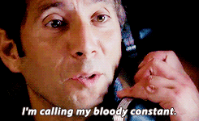
Figure 1: 我又想起了Desmond的对白……
你会不会是我的constant呢？在成为你的牵挂之前，今晚我选择不去找你．
经过昨天，我发现我有点患得患失．我怕把你丢了……但其实我从来没有拥有过你．
放心，我一直都在[Sun]．
我是个大龄大叔，也拍过拖，但在感情上觉得自己还是一点也不强大．自己不温暖，如何去温暖别人？要成为更大的太阳，才能照耀想照耀的人吧．
今天和你聊天，不知道为什么气氛变得有点奇怪．这两天明明是我感觉想通了，却反而觉得你离我变远了．
静待花开．
发现你某App上的头像和签名变了．不自觉地又充满遐（瞎）想．偷偷地把签名改成了“勤浇水”，感觉自己真是个幼稚鬼……
既然登陆了，顺道把聊天记录翻了一遍，又把微信上的记录也翻了一遍．我从高中毕业开始，除了什么申请以外，基本没有写过超过500字的什么东西……表达能力大概也就最多停留在高考作文那种水平．以前语文老师和我说，文字是有温度的．对于这种温度的触感，在不经不觉之间就变得迟钝．写“东西”，只能写记叙文了，跟学科文献一样，变得真实，但苍白．尽管表达能力日渐下降，但感受的能力似乎依然存在．纵使只有三言两语，也能感受到温度的下降．但是自己，还是我们？
想和你说话，但又怕你烦．想和你说话，但你你的语言里又感觉到一点降温．当越靠近的时候，还没有走在一起的时候，就越怕突然出什么状况．就像跑10公里的时候，到了最后1～2公里，明明身体已经适应了节奏，但只要有一丝杂念，就会很容易突然想放弃．差1公里而已，9公里已经达到锻炼的效果了，明晚再跑完不也一样？越是有这样一种想法，就越纠结．但越明知这一种想法要不得，这一种想法就越变得强烈，越阴魂不散．这是墨菲定律？
我变得在乎你了．但我却没有勇气和你说．但我依然想，有一天你和我一起把它卸载了．
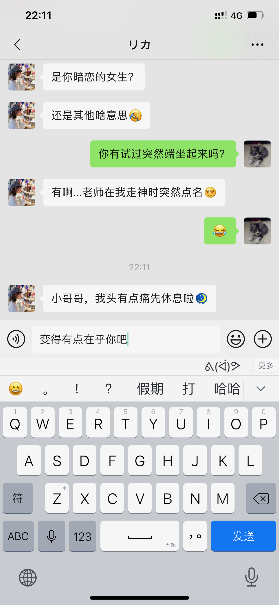
你问我，爱情和婚姻只能选一个的话？
前几天看到一个词“老鹿蹒跚”．开始只是觉得有点搞笑．在别人眼里我大概已经是头“老鹿”了吧．当自己沉浸在25岁的世界里时，可能也会不自觉忽略了一些旁人的流言和嘲笑．但我问自己，我现在是“蹒跚”呢，还是“乱撞”．村上说，
我能感受到非常安静的幸福感．吸入空气，吐出空气，呼吸声中听不到凌乱．
每一下心脏的跳动，都能感受到此刻的我还活着．这一刻，我正在写下这些不明所以的文字时，它十分平和，缓慢但节奏依然是“咚，咚，咚……”，那么的清晰．第一次看到你笑容的时候，它“咚咚咚……”的跳着．脸颊突然凉飕飕，又似乎有一点紧张．
我大一的时候，肺活量已经达到了6500，每次运动完之后我只要抬起头，闭上眼，深呼吸三下，就能把躁动的内心逐渐平静下来，一直特别感觉自己心肺功能应该比较良好．初见的时候，我不清楚我是否能做到明镜止水，但我选择没有去做．那一刻，我享受着它狂妄地跳动的感觉．我想，不是因为我无法支配这躯体，而是我想记住这一种振幅和频率，它不同于我一个人发呆时所听到声音，不同于我戴着耳机走在校道上享受一个人的世界时的宁静，不同于我平淡生活里的每一跳动．
于是我想把这一种感觉温存下来．我不知道爱情是什么，但我不会选择不由得我去感受每一次呼吸，每一次心跳的婚姻，或生活．
答应我，要勇敢．
今天，2月9日，我重新了一次所有的聊天记录才发现，原来这一天你已经在给我暗示．真是后知后觉．
我不知道爱情和婚姻是怎样成为原则性问题．也不知道如果是我问你的问题，你是不是会选择后者．
我只想拖着你的手，带你奔跑，无论迎着阳光还是风雨．
我都没有表白，你就发卡了．
好难过．它，大概只能用这三个字平铺直叙出来．
我不知道什么是原则问题．喜欢一个人会被什么原则左右．更不知道年龄差是怎样成为一个原则问题．我可能想诡辩．大一年是大很多吗？不是？大两年是大很多吗？……大六年是大很多吗？不是？大七年是很多吗？是？为什么多大一年就是大很多？为什么八年就不可以？
八年，差的是什么？八年，是不是就可以定义衰老．经常看到说35岁的程序员将何去何从？我从没有想过这个问题．为什么喜欢的事要用年龄去界限做与不做．为什么程序员总要被扣上加班多，头发少，死得早，情商低的帽子？八年是不是就得扣上身体素质差性不健康的帽子？可能不是，但就是．人それぞれ？在大众眼里，我不过也一样．
静待的花，原来与我无关．
我知道情绪要开始失控，我怕说错话，怕失去你，不敢说，也不敢写．我只能跟你早点说晚安．
在床上对着天花板又一想，你不过在逃避，或者回避．这没有对错之分．今天可能这个问题，你选择放弃眼前，有一天是不是也会因为“原则”（被迫？）放弃另外的东西？没有知道今天还是以后哪一个更加重要．只是，可能我把感情看得很重．我知道你肩负着压力，虽然人无法总是过得无拘无束，但我想你过得更主导一些你的生活．问题从前有，现在有，以后也会有；自己有，跟我有，跟别人也有．今天的我可能现在不走运，还不是可以成为让你做出改变的那个人，但我想，你一定一定，有一天让我看到你想，你能真正选择时的笑颜．
都说年纪大的人时间耗不起，对我来说几个月后跟我说性格不合什么的被抛弃，都没被遇到一个能聊的人因为突如其来的压力所放弃带来的难过要大．我每天都在积攒勇气，在等待，也在克制．我以为我能握紧了．很好笑吧，为一个认识15天的人流泪．胡乱就把别人当最后一个．原来是我自己没get到，还使劲给别人暗示，我才是傻傻的一个……我感觉我不会再勇敢了．
这个原则，真的让我很难过．
时间能治愈一切，也能毁灭一切．
沧海桑田，在时间的长流里，一切显得多么渺小．雕阑玉砌应犹在，只是朱颜改．有感情的都被治愈或毁灭，只有没感情的才任由时间缓慢侵蚀．在还能感受每一下呼吸和心跳的时候，我不想把感情交给时间来赌一次，看下是治愈还是毁灭．如果最后我是自取灭亡，那到时就让痛苦来得痛快一些．但我不会放弃你．
“你有没有想过，也许其实你也没有那么喜欢我？”
我想了一下，好像也没有多喜欢，7分喜欢吧．1分为你的笑容所吸引，1分感受到你的直率和真诚，1分看到让我最欣赏的自律，1分会顾及家人的感受和羁绊，1分让老迈的我依然向往的简单和纯真，1分敲开了通向彼此内心的大门，和1分毫无道理的只因是你．不知道几分才符合表白的规矩，也不知道几分才算喜欢．但是，我能感觉到眼下的你，是我想一起书写故事的人．
曾经我也会怀疑你并不真实，看不到也触不着．后来我明白，万一你不是真实，那又怎样？但能让我洋洋洒洒一大堆废话写下来的，也只有你一个．我怕这一种心跳会忘记，尽管它在我的键盘上变得如此平淡而乏味．
如果我们还是相隔100步，我走90步，你走10步？
心里空荡荡．想找你说话，但又不知道怎么开口……为什么突然变得那么难．
我把包里的钢笔和本子拿了出来，有时我不知道做什么咋的就会这样．字也写得不好看，画也不会画，一年算下来，大概应该没执笔写过多少字，更何况是钢笔．但是当钢笔拿在手上，在纸上“沙沙”地在纸上滑过时，无论写什么，抄什么，画什么，感觉很实在．这大概是为突如其来的空白进行填补的一种方式．
看着这本子，我想起了以前学习日语的日子，里面写满一页一页的单词，假名，和只有我自己才看得懂的笔记．看着本子的封面，也不知咋的想起了折纸．
手拙，还是折两次才折出来，唉．晚安．
告诉自己要看开点，可一想到你再也不会找我就看不开了……保持距离，大概是你能保护自己情感上不受伤害的最好方式．不会陷进去，就不会不能抽身．我不想你受到伤害，但我也想你要……
“明天再聊”，我大概再也看不到了吧……
😔😔😔好难过．那么心里突然一空的感觉，该用什么语言来表达．打字好难，坐在桌前也好难，我想带你去看阳光．
刻意向你了解了一下你以后的想法，一直觉得你年纪轻轻承受着巨大的压力haha……😂然后你就转换话题了……无法再深入走进你的内心．
我相信（或者只能是期待）有一天你会向我敞开心扉．
终于听到你的声音，一听就知道是个很正经的（真面目な）小姐姐．听到的那一刻，感觉“実感”又增加了．
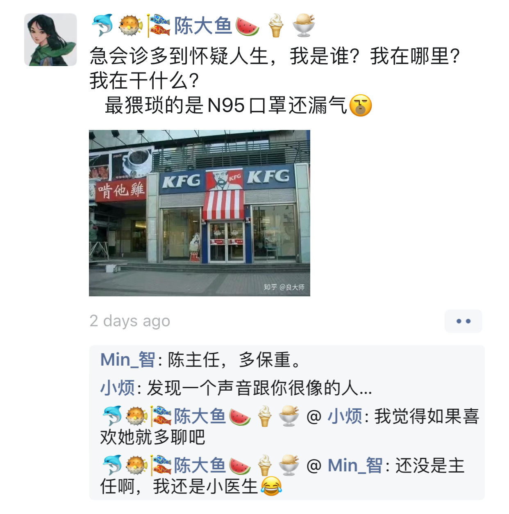
早上给你发了一首最近喜欢听的歌，感觉大小姐的声音很有穿透力．你的笑容跟她的一样好看．
我也想，有一天可以为你而弹．我也想，可以守护你的笑容．
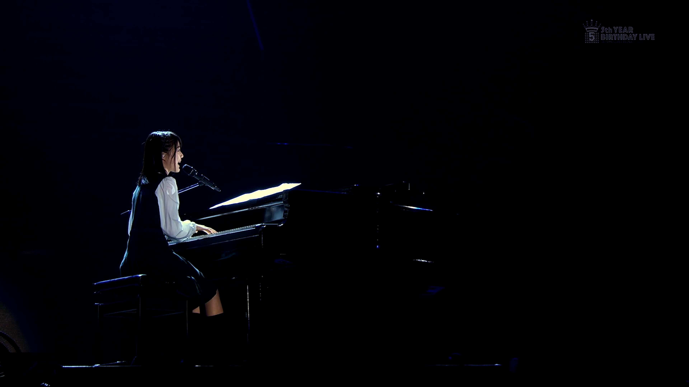
今天看到有人说：如果要分开，那么怎样区分是不甘心还是喜欢．如果分开是觉得自己惋惜，那应该就是不甘心．如果分开是因为一起的时候享受和对方一起的过程，那么应该是喜欢．
直到我和陈医生通过一条朋友圈聊起天来．
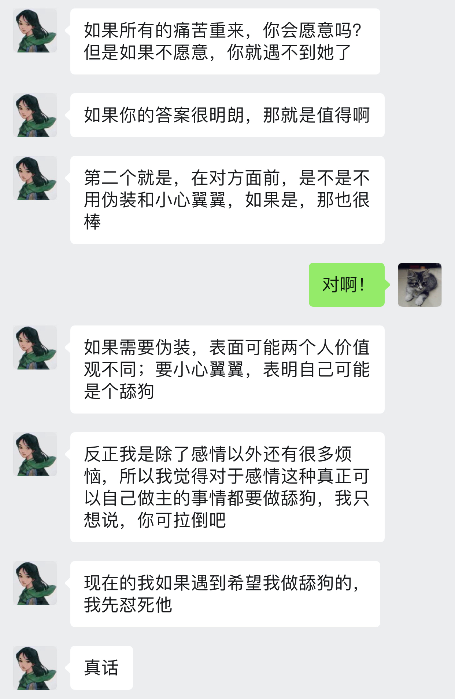
原来的我，大概会在二月十日和你表白．我想把这特别的一天，变成真正的纪念日．而现在五天前，我就知道了结果．如果这个五天前的这个结果，再推到二十一天之前就让我知道．我还会去答你的题吗？
我想我会．答题只是一个仪式．最初的我为你的笑容所吸引，而它也会一直成为我一分（份）喜欢．你我本来就萍水相逢，就算现在穿越回去，告诉自己一切，我会信吗？就算信了，一切就会变得完全不一样吗？我想起了看过五十几次的《求婚大作战》．泣き顔を笑顔に変えたぐらいで、人生変えられると思ってる？去认识你，是我当下最想做的事，之后怎样展开，看的不是剧本，而是你我．我享受向走你近的这个过程，享受在你面前可以不用伪装坦露心声，享受你与我分享生活与情感的点滴．哪有什么时间去想什么甘心不甘心？能做主的事情，是太少了．我的想法，是不是太肤浅．
两天都潮潮湿湿，但今天出太阳了．
在还没有走近你之前，我不了解你的过去，也不知道你经历过什么．但是，我想你变得坚强和勇敢，用笑容把所有阴影抹去．我不知道陪伴是不是告白，也没空理会，我想你开心，这样才不辜负你的笑颜；如果不能，我想让你开心，只要我可以．你想静静，那我也静静的．不然，我一直都在．
初めて、君は僕の名前を呼んでくれました．バレンタインデーより、今日を僕らの記念日にしてほしいです．你不用怕我误会什么，因为你说什么我都会误会的……或许你会因此而疏远我吧．
今晚在这里说晚安吧．
☺️
自我介绍，演讲，比赛的我，确实不习惯只有一个人的舞台……但和陌生人聊天却不会．不过，你早就已经是“熟人”了……以前我常常发现我有个坏习惯，就是不害怕与别人交流，但是常常很容易就交浅言深．每次都是自己过后才发现．虽然并没有因此而吃过什么大亏，不过每次都会提醒自己不要太早地打开自己的内心世界，渐渐就变得有所保留．和你，我无话不说．或者是因为是你，让我卸下了所有防备吧．
当我开始写着丑丑的字的时候，你还是个宝宝👶哈．明明在同一时空里，却在不同的时间线上．不过那又怎样呢？缘是天意，分是人为．虽然不在同一起跑线上，但相遇是天意，还有我的勇气．过去已过去，未来还未来，等着我 们 创造呢．
一屋两猫，三餐四季．缺个人呢……
今天应该是我认识你以后离你最近的一次了，目测只有几公里……不敢和你说，怕你不高兴．
在车上，我一直想．什么才是长久的婚姻．
遇到一个喜欢的人应该不难，遇到互相喜欢怎么说也会难一点．
虽然离我还有点遥远，但我大概不会要没有爱情的婚姻吧．经常看到有说要找三观一致的人，我总觉得有点抽象……是不是可以理解为聊得到一起，玩得到一起，活得到一起就是了．有时候看到别人吵架，连吵架都吵到不一个点子上，是不是就对不上头……
在这一个离婚率奇高，各种出轨分家产新闻到处飞的年代，到底是什么让两个人能坚持走下去．这么说又好像不对，如果婚姻是幸福的，是爱情，为什么需要坚持，理应是享受啊．
我想长久的婚姻应该是喜欢、沟通、责任、信任和包容．（写了一大段又删了……像高考作文🙄）
至于年龄差在这扮演什么角色，我实在不知道．用一辈子换来的花朵，相比残缺，我宁愿握紧阳光好好盛放一回．
感觉你什么时候都在操心着家里的事情，真是个懂事的孩子……但我想，如果你也给自己一些时间和空间就好了．虽然你也有，但感觉也是贡献给家里的……
我的那个时候在做啥呢？我想了一下，大概就是做了一年的后台开发，发现自己还是想做跟数学相关的事情．依稀记得在愚人节给CEO发了邮件说想聊一下离职，还特意说这不是愚人节玩笑……那时候应该是我第一次如此坦荡地和一个工作上认识的人谈这么多吧．通常，我通常和同事会保持一定的距离，当然不是说像陌生人一样，而是说不会把每一个同事都当成朋友关系来维持．当然，也有少数同事不是，CEO就是其中一个．
那时候公司只有10几人，正处于生死存亡阶段，他没有责备我，我也没有扭头就走．3个月的离职交接时间应该是史无前例了．最后的日子里，我把留到我手上的最后一个产品做完，而它也是我在那里唯一无论怎样都值得记住的产品．每次脑海中浮现起它的名字的时候，就会想起同一TEAM里的每个人奋斗的样子．尽管人这么少，但操起心只做好一件事的样子，是多么难忘．作为第一份正式的工作，在短暂的一年里，除了收获到了经验，我还收获到了尊重和成就感．
以前我会忍到晚上才找你，现在不想忍了……
你会唱歌？！我……想听．我也……
之前听说，如果老人和小年轻谈恋爱，老人总是经历过很多，对小年轻的想法把握精准，总是让小年轻感觉自己被照顾之类．还有就是老人的很多想法，都来源于各种Ex，因为以前犯过错了，现在才懂得去做．为啥我没有这样的技能？！是青春都喂小狗了，还是说自己太没心没肺，还是情商太低……还是说不应该去想，舒服就好？😂
有人说：回忆就代表活得不如从前了．如果真的活得不如从前了，我就飞回这块地方，静静地回忆．
第一次看到这句话的时候，应该是我还在用微博关注了霍思燕的时候．对她的印象目前只留下了这句话和知道她是一个美女……那时候看《玫瑰江湖》，她貌似还没火起来，觉得长得有点好看就默默关注了；后来不知咋的火了，反而就没有再关注了，直到没有再登陆微博．
我没有去想我是不是活得不如从前了，但我是一个喜欢回忆的人．或者说，有些奇奇怪怪的记忆总是占用着我的内存．现在我还能一字不漏地背《桃花源记》，但我也不知道为啥我记得的是它．其它文章大概也就记得一两句：秦人不暇自哀而后人哀之，后人哀之而不鉴之，亦使后人而复哀后人也……会语文书哪一篇文章上面插图是在左页还是右页，文本在图的上面还是下面．会记得数学书里某个定理是从哪一页开始证明到哪一页．还会记得自己一些无聊的涂鸦话语写在哪一页的空白上．会记得放学的时候拿粉笔扔过谁．会记得自己在何时何地跟谁说过哪句无关紧要的话……好吧，这些东西没什么好记，也没有什么好回忆的……但不知咋的就保存得这么好．
住在学校的时候，散步经常文化广场，就喜欢在那里驻足停留．那里总是没什么人．记得考《拓扑学》之前，因为图书馆没有座位，我就在那里坐了好几天．那是一月上旬，虽然很冷，但有阳光，所以实际也没那么冷．我就那样坐着看课本，偶尔也看一下路过的零星几个人．好几天里也没有发生什么特别的事情．就像，一件小事．在那之后，当我路过广场的时候自然会想起那一段短暂的日子．现在我已经不在学校那边出没了，有时我只是走在某条路上，就会突然想起那几天．那时的我不是有多刻苦，有多认真，也不是说考试有多么惨不忍睹印象难忘．我大概只是记得那几天的阳光和温度．
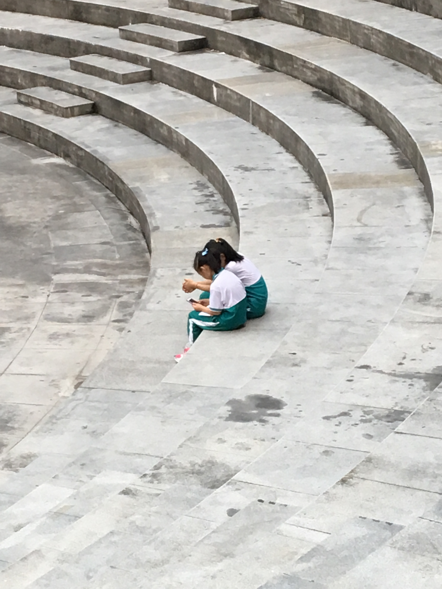
夜阑人静的时候，有时会打开手机，随意翻翻相册，点到哪里就是哪里．我不知道这是不是刻意的回忆，我就是无聊随便翻一翻．照片里自然记录下过往的那一个瞬间，蓝天，白云，阳光，风景，人像，笑颜，夜幕，灯光……是那么的真实，看到的时候自然会想起当天眼前的景象．但是，按下快门那一刻的心情，只有摄影师自己知道，也只属于他自己．脑海里那些不时闪现的片段，大概也是因为当时的心情，才变得那么深刻．尽管它可能很奇怪，比如那一个涂鸦，大概是上课走神，在老师眼皮底下痴笑着画出来的．自己没有意识到，但它可能跟记忆一样潜藏在某个大脑部分，有一天伴随记忆总能被唤醒．
所以，那些所谓的回忆，大概最重要的是它记录着自己的心情．片段会变得模糊，但心情不会．我没有怎样去想是不是活得不如从前了，可能偶尔我只是有意或无意需要当时去唤起曾经的那一点波澜，让自己记得生活的各种味道与颜色．有天真的活得不如从前了，我想，我应该也会找个地方，静静地回忆．
如同往常一样，跟你聊天很愉快．晚安．（当然，我心里还想着别的哈哈．）
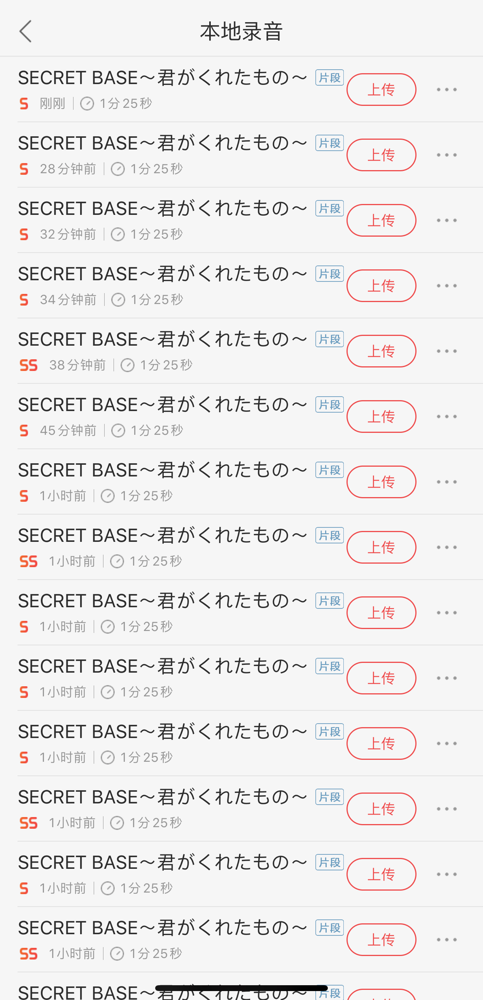
😕这件事，比我想象中难得多，很多，非常多……
说出来可能你不信，我3岁就精通看手相．这两手一看，就知道是是百年难得一遇的好姻缘！
第一次在现实里看到食指比无名指长的人哈哈．好特别．其实你的手指很修长，虽然大家手指的长度和掌心差不多，但我的手指就粗很多……看到手，我就会想象整个人是怎样的．如果是看到胖乎乎的小手，就想是不是人就会有点婴儿肥？看到修长的手指就会想是不是个清秀的小姐姐？看到……我想起了我看到猫咪的爪子的时候，眼睛都要发光了！梅花印一样，可爱极了！
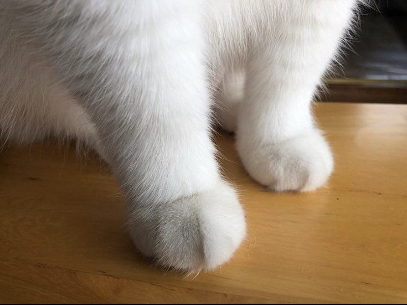
悄悄地跟你说，我还发现了你的菜单栏上有4个看视频的软件！还有，你的字好像打结的小虫子！看起来竟然有点可爱！😆
😄我是绘图小能手～
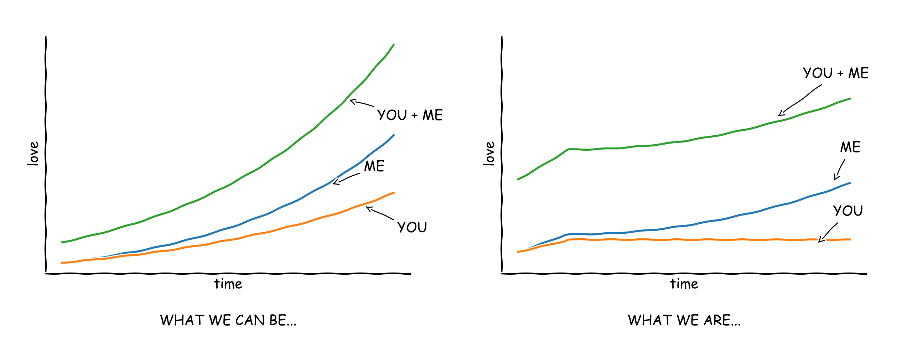
《求婚大作战》里有一句话，对一个大叔对主角说的．
失敗しても当たり前、成功したら男前．
这句话日语里好押韵……我的水平难以将它翻译成中文而同样押韵．粗暴的翻译过来大概就是“失败是理所当然的，而万一成功了就出人头地．”
可能失败的事或者不太可能成功的事情实在太多，硬是要算概率的话，虽然可能只有5%会达成，但万一成功了呢？是不是这个过程的一切一切都将显得更有意义？頑張って！君も！僕も！
有时候很矛盾……想和你多说，但会想你会不会介意．
一月快乐～
当你说“我们”的时候，我总首先想起的是你们医院，而不是你们诊所……我想，莫非医院也会倒闭？！🙄
I've always believed in numbers, in the equations and logics that lead to reason. But after a lifetime of such pursuits, I ask, "What truly is logic? Who decides reason?" My quest has taken me through the physical, the metaphysical, the delusional – and back. And I have made the most important discovery of my career, the most important discovery of my life: It is only in the mysterious equations of love that any logic or reasons can be found. I'm only here tonight because of you. You are the reason I am. You are all my reasons. Thank you.
— A Beautiful Mind
今天走在路上的时候不知道咋的就想起了这部电影．除了结尾以及主角陷入妄想的片段，剧情基本上我都忘了．这段话是电影里的他上台拿诺贝尔奖的致词．这个世界上不讲逻辑，不可推导，不能证明的事情是不是太多了．为什么喜欢不能只是喜欢，爱不能只是爱．不能是全部的话，也得让它们占上个百分之八九十吧．所有剧情都遵循剧本而不是内心，再美的公式又有什么用！人生如戏，如戏个屁！
I don't, I just believe it.
多一个月，好好好漫长啊！😔
做梦是一件好奇怪的事情．
以前曾经试过梦见一些话，一些几乎我百分之一百肯定从没听过的话，然后我就记住了．有一天，我突然有别的地方见到这些文字，觉得非常不可思议．
我昨晚梦见了你．然而我俩却从未谋面，唯一记得的是你的笑脸和声音．我们走在小镇的街道上，附近都是矮小的房屋，但不是在日本．突然就地震起来，周围的房屋都摇晃了起来，地面接着就开裂了．我带你一边跑一边躲开地上的裂缝，跑了不知道多久，大地才平静下来．奇怪的是，为什么街上除了我和你，为什么一个人都没有？看到旁边的你还在，还好．不知道怎的，就醒了．
实在忍不住，想告诉你，我想你．
啊～！
这是个可能比暑假要长的寒假．很长．这个是你问的问题的真实答案．
其实我只见过一两次牵牛花．
之所以叫朝顔其实与牵牛花没有关系，虽然朝顔就是牵牛花．第一次看你照片上笑顔的时候，我想，这大概是早上起来想看到的样子，这大概就是一天都想看到的样子．于是就借用了这名字．当然，如果牵牛花也能开到晚上就好了．
据说牵牛花是一种很勤劳的花，是生命的象征．
晨曦中人们一边呼吸着清新的空气，一边饱览着点缀于绿叶丛中的鲜花．
同时也代表着坚持．
牵牛花具有极顽强的生命力，花藤虽然娇柔细长，却能绕篱萦架，攀援延伸．
我再去查了一下牵牛花的花语．
爱情、冷静、虚幻．
现在回想起我所看到的你，这真的没有起错名字．当然，在真实里它名字的由于，我还是比较喜欢这个．
因为牵牛花的花朵内有星形花纹，花期又与牛郎织女星相会的日期相同．
如果一定要变故事，为什么不选一个更美好的？
今天是2月28日，这个月的最后一天．
离我们认识过去了36天．
离我们真正聊了起来过去了34天．
离我还没表白就被你拒绝了过去了21天．
离你上一次主动找我过去了大于等于21天．
离我跟第一次跟你说我喜欢你过去了20天．
离你第一次说感谢有我的存在过去了15天．
离我们第一个没有成功表白的情人节过去了14天．
离我决心把我（们）这一切都分享给你过去了14天．
离我给你送了第一份纪念日礼物过去了4天．
离我第一次光明正大地说想你过去了两天．
这应该是我过得最漫长的一个二月了．明明二月只有28天．可是，这是有你存在的28天．从你关门的那一刻开始，我知道只有我自己的握着的话，总有一天你会离我越来越远．但是，我喜欢你．
我这样的人是你眼中应该很傻吧hah，我只是想喜欢这件事情纯粹一点．
一觉起来发现今年2月居然有29号！看来感情这东西真的会让人变傻……
看到你这么忙，我在想我是不是应该也要收敛收敛……🙁
晚上我在唱《あなたのために弾きたい》，歌的难度跟长短真的没什么关系……没学会弹之前，先学会唱吧．
好想找你说话，现在是21点09分，忍多一个钟的话，等你睡了今天我就能放弃这个想法．
今天早上起来，我又把你的昵称改成了「アサガオ」……😒可能是强迫症，平假名看着总是有点怪怪的．而片假名作为地名或者人名就顺眼多了……

让我有想法的是“总是很被动不愿意主动害怕做错什么”．想了一下，大概有两种情况比较主动的．一是遇到喜欢的人，二是做我决定做一件事之后．但是，这句话换一种说法就是“遇到喜欢的人，或者在决定做一件事之前，都不怎么主动”．
一就不怎么说了哈哈，这么久以来，你也应该知道了．多难才遇到喜欢的人，不主动的话就分分钟错过半辈子．
至于二，在我下心决定去做一件事的时候，确实有时会比较忘我，甚至想一个人一直沉浸在那个世界里，直到完成．但是，在下决心之前，有时我总会想很多，去想这件事的最好最坏效果，去想这件事影响到的人和其它事，去想什么方案才是最优解决方案之类．我不敢说自己是有多善良的人，但是，确实会担心对别人会有什么影响．这个其实又算思虑过多，不是算“不主动”，而是我的“主动”，受到了它的影响．不是常言道，成大事者都不拘小节，所以我觉得我应该不会做出什么“举大计”的事情（当然不是说我毫无志向……）．或许我会追求生活富足，家庭美满，衣食无忧，也或许我会追求自律而自由，目前在我看来，“举大计”般的事情应该不是达到无论哪种目标的充要条件．不过，学着变得更果敢一点，应该不是坏事．
说到程序猿的印象．😂为什么你的印象会是西装皮鞋……不过，我感觉我不是个合格的程序猿．拖鞋、格子衬衫、大裤衩……我一样都没有．我最多的衣服，似乎是运动裤和T恤……😂T恤好像都是黑的白的和藏青的，同款都好几件，运动裤好像也是同款的几条．😂鞋子，每次换的时候都是同一牌子同一款色的不同型号……在这方面，可能我是个枯燥的男生……😂当然也有可能是因为我懒，因为我觉得运动裤和T恤比较容易洗……
不小心又废话一大堆，还是控制一下字数吧……
今天这个有点搞笑……我说石门小学的时候，你说我猜对了一半，而这两个字的一半……😅确实是一半．
每次撩你，你都总爱发表情hah．不过你说下次不发表情的时候，我突然反而有点方……按目前来看，会不会是不发表情不回话……我经常会想撩你🙄，但是，最近有点小心翼翼吧．不是在你面前不能做自己，而是想考虑你的感受吧．我喜欢你，也就我喜欢你．
如果梦里与现实是相反的，那我再也不要梦到你了．
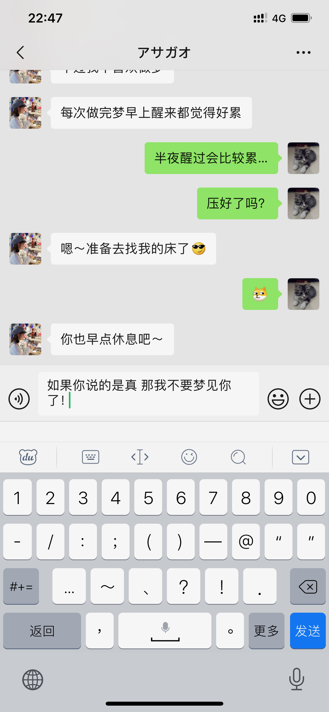
天在下雨，我在想你．
早上起来的时候首先想到这八个字．不知道怎样想到的，就是觉得有点顺口……
很早就被雨吵醒了，比我的“闹钟”还要早．就这样裹着被子躺在那里，身体温度刚刚好，除了脸有一点点凉．就这样透过蚊帐看着天花板，心想，你应该还没起床吧哈．
中午吃饭的时候也还在下．
今晚回来很早就躺下了，在床上看着手机，犹豫要不要找你．最后还是没找．我很烦人吧……不知道为啥，又想起了那八个字．无聊打开Google搜了一搜，居然有首叫这个名字的歌！！！还挺新的……虽然是个不知名歌手（好吧，只是我不知道……）．
有时候很多人和事，就这样滴答滴答，魂牵梦萦．
你可能不会觉得你跟我说一句加油影响有多大吧，毕竟对你来说只是作为朋友的一句普通鼓励．
我大三的时候有一段时间，不知道怎么的就突然就喜欢上巧克力了．😂那时候还只是个穷学生，把生活费都拿来买巧克力了，每次一买就是好几百块．大大小小各种品牌，各种口味，都吃了一圈．虽然吃了很多，我也只能区分出口感的好坏，但不知道怎样的巧克力才是最顶级的巧克力．听说巧克力里比较多的成分都是神经系统兴奋剂，很容易就让人着迷，所有吃巧克力有一种幸福感．开始我也在想，我是不是在吸毒了……时间久了我逐渐明白，主动和被动获得的快感是不一样的．我喜欢它在舌头上慢慢融化的感觉，丝滑伴随着浓香醇厚，最后停留在舌头上，还有一点点发麻．😂那是吃多了……まぁ……这感觉是吃糖或者吃其它食物都所没有的．
都说吃巧克力有幸福感，只是这幸福感因人而异罢了．今天买了一德芙，虽然不小心融化了，但还是重温了一下多年前的这种感觉．
女生节快乐．
如果没有疫情，如果没有那一次家庭会谈，现在我应该拖着你漫步在华农的校道上，看着盛放的黄铃木和飘落的紫荆花，感受着春天的气息吧．
可是世上没有那么多如果．我想了一秒，我们已经认识了43天了．这一段日子，多得有你．以后的日子，我还想有你……在2020年暖冬的尾巴上，走向春日的这段日子，我永远也不会忘记．现在的我不会去翻回去看这一页上面的东西，因为记下来的那一瞬间已经在我心里激起一次又一次涟漪，我不会忘记了．如果我有下一次再看回去，我想是我跟你一起看．
虽然世上没有那么多如果，但世上还有很多相信和可以．疫情来了，有无数的人前赴后继，病毒给人们的生活带来阴霾，人与人之前甚至变得更不信任．但依然有人为了自己为了家人为了朋友为了社会去守护着这一份信任，哪怕明知可能要付出生命的代价．因为他们相信，阴霾遮天蔽日，但它终将散去．
我也相信，因为不想「気づいたら片想い」．与喜欢的人牵手去看春天盛开的黄铃木，这样的日子值得努力和相信，值得去和……争取一下．
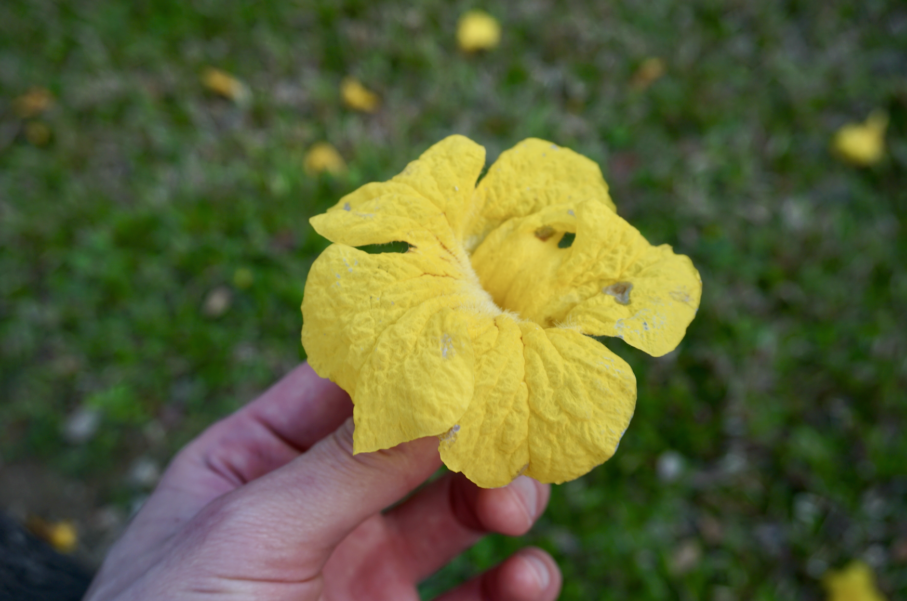
啊啊啊啊～好想你，丽华．好想跟你说话．现在是下午16点05分19秒，在发呆．
虽然我又想你了，但我觉得我不应该经常大声跟你说：我想你了！
我应该把自己变得更好一些吧，这样才有可能配得上你．这样才有可能成为那个能让你愿意去冲撞“原则”的人吧．
看到你专注的样子，想起以前的我，我也有过这样一段日子呢．现在的我当然也没有自甘堕落，只是在所有生活的事情里，每样东西的比重在不断地发生着变化．对于此刻的我来说，最想就是追逐爱情与工作．每个人都在自己的时间线上奔跑，有人慢，有人快，有人终点迟迟未见，有人早已在歇息．这个年纪还在追逐爱情或许会被笑吧，但是遇到喜欢的人，我想追想上她，然后与她一起奔跑．
之前我看到的一篇文章，也想你看看．
New York is three hours ahead of California, But that doesn’t make California slow. Someone graduated at the age of 22, But waited five years before securing a good job. Some became a CEO at 25, And died at 50. While another became a CEO at 50, And lived to 90 years. Someone is still single, While someone else got married. Obama retired at 55, & Trump started at 70. Everyone in this world works based on their time zone. People around you might seem to be ahead of you, & some might seem to be behind you. But everyone is running their own race, in their own time. Do not envy them & do not mock them. They are in their time zone, and you are in yours. Life is about waiting for the right moment to act. So, relax. You’re not late. You’re not early. You are very much on time.
我不喜欢你客客气气的样子．
有可能我走了90步，我们还是相距10步，虽然我不想它发生，但或许它真的发生，我也不想我们做刻意保持距离的朋友一样．我是有时有点小心翼翼，但我不想小心翼翼，而且我也可以不小心翼翼．我觉得10步的距离，也不至于需要小心翼翼．于我，你是独一无二；于你，能否也稍微能让我们靠近一点？
我是你朋友圈的常客．
从我认识你之后，就没怎么发过朋友圈了．
我点进去之后，会翻到最下面，然后从最后一条开始往上面的看．
那里只有半年的时光．从1月开始的时候，可以看到的是7月的内容，而现在最旧一条已经是9月的了．这是我所能够触及的，最初的你了，尽管那段日子并没有我的参与．包括你的认真，你的努力，你的勇敢与你的笑容．
于是这样，每次我点进去，就像感受着时光一点点流逝，直到它可能变得一条也没有．なんか切なくなったね．
今夜は月が綺麗ですね．
— 夏目漱石
昨晚你说不要太在意时间，这个倒是让我有点意外，不过我还是挺高兴的，虽然我知道是在什么前提之下．
我以前不吃茄子的了．觉得它的口感有点恶心，然后味道有点微妙．大学的时候有一次，忘了什么原因好沮丧好失落，去美食坊点了一盘鱼香茄子，心里想着的是惩罚自己．（我也不知道为什么我会有这种自残的想法）当阿姨拿过来的时候我跟往常一样觉得它很油腻，至少看起来是这样．就这样带着丝丝嫌弃，吃了起来．也不知道吃到第几口，突然觉得这种和咸鱼混杂在一起还带着砂锅上停留过的味道有点香，不，真香！那应该是我第一次完整吃完茄子．那天以后，在我最讨厌的食物排行榜里，就被我删去了茄子这一项，而且，我发现我不再嫌弃它的口感跟气味，除了鱼香茄子，只要是个茄子都：真香！这是我与食物之间的一次比较难忘一次经历．
与食物尚且有奇遇，何况人呢？或者有天真的可以试试酸菜扣肉．和你．
今日はどうだったの？
— これは最高の挨拶だね．
今天看到这个，实在太搞笑了．不过我已经不记得我妈做的茄子难不难吃……因为自从知道我不喜欢吃，就再没有做过了……
突然发现一件了不起的事……
这么想，我是这世界是除了你父母之外，最“喜欢”你的人了，一下子就感觉自己厉害了很多，自豪感油然而生……虽然我不是你的啥，的啥，的啥，但我依然珍视着你的存在．
😊
10天 50天 100天 500天 1000天 5000天 10000天 50000天…50000天到不了！一辈子就没有了！！！
— 不恐怖吗！
每次这天我都只发一个表情……现在回来看，这句无聊的话好像有点意思！
其实我每次给你说“那”的时候，都不知道你知道不知道是“这”．
😅怪自己当初怕死，怕大家尴尬……不过我还是希望你知道的！我想让你在这看到我的内心世界，虽然文字表达出来有时略有偏差……（其实是我的表达能力一般……）有时又略显得文艺……有时甚至有点肉麻……
まぁ……就这样吧．我怎样表达或许不重要吧，重要的是你看到的感受到的吧．你看到是怎样就怎样，这样对你才是最好的．不想令你喜欢我，想有天你喜欢上我．是的，达到“那种”程度的喜欢．是的话，那也是你的决定．这样的话，就是两份坚定．❤️
这是我（们）的第51天．
好久没试过头那么痛了……感觉就是缺氧．
发现最近经常本地写完忘了上传．
今年似乎错过了绿叶榕落满一地的那几天．
晚上回来的时候，看到隔壁小区的几棵，地上已经没有一地金黄，但是树枝上已经萌发出新芽．从下面看上去，一整片，好有生气．可惜的是天色已暗，看得不太清楚，哪天白天来的时候不知道还会不会是这一片翠绿色．
以前在学校的时候，每年从春天开始，看着学校里的异木棉盛开；到木棉花开始掉落一地；到三月饭堂附近的细叶榕一片一片地开始落下，到一夜落光，而后萌发新芽；到西门路上的黄铃木染出一路鲜黄以及草地上的粉红色不知名小花开满一地；到教学楼周边的广州樱含苞待放，但又经常不开；到宿舍窗外的大叶紫薇开始盛放，到湖里荷花开始露出尖尖角……春夏秋冬，变得习以为常．
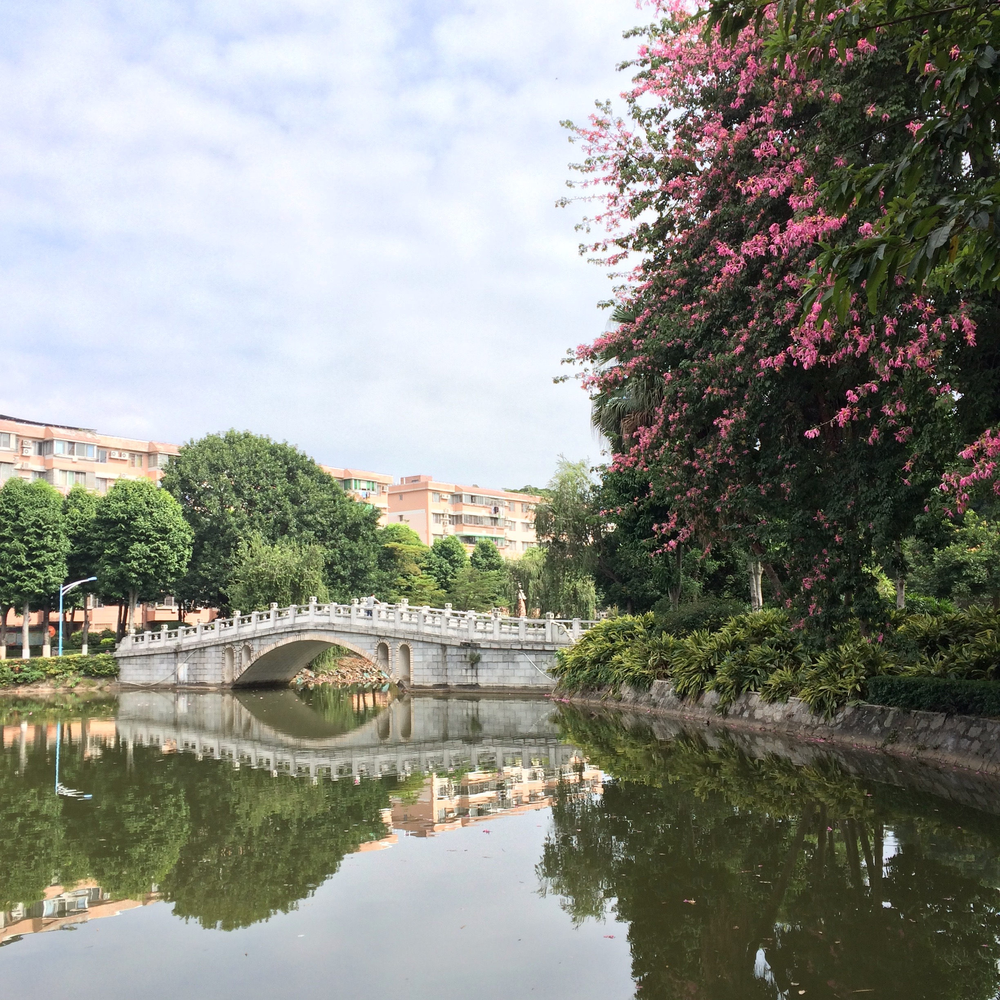
我大概还是喜欢那里吧，即使别人眼里也是如此简单的景象．我想带你看看，看这春夏秋冬．
春夏秋冬，能不能都有你．
当我女朋友吧．
其实我也喜欢阳光明媚．当然更想你是我的小太阳，而不止是小太阳．
剪了个头回来发现，真丑……对去陌生的地方剪发有恐惧，每次都要跟Tony解释说要怎样怎样剪，其实我就想剪个碎发而已．主要原因当然是好洗！易干！可是，每次都说剪碎一点，不要剪平不要剪圆，结果还是剪圆了……😕不过，就算去老阿姨那里剪，每次剪完都是颜值的低峰期，可能本身就比较丑……
慢慢地就接受了这一个事实，我不过是普通人里的普通一员．丑就丑点吧，头发长出来就好点．丑也可以好好学习天天向上，丑也可以喜欢你一样的女孩子．于是，当颜值变得像年龄一样，成为一个数字而已的时候，纠结的事情就不复存在．所以剪完戴上眼镜看镜子的时候，内心感受就是：唔……嗯．
😂我这样的人是不是太无趣了，这样的生活是不是波澜太少．或许有时候人是需要用力地表现出各种情绪，但自从认识你之后，我只想跟你大笑．特别难过有一次，偶有失落，但还在等待着我们能一起大笑的那一天．
你就像一只一直在奔跑的小羊羔．
你一忙起来，我们又只剩下半小时了，算上表情一共75句，其中我发了42句．
我在想我是什么时候怎样早起的，才有了这样的日子．仔细一想，应该是自从我开始跑步之后．
读研的时候，生活实在太单调了．有天有个大学同学过来找我谈心，那时他正在纠结要不要离职．在操场一番畅谈，突然大家都想说要不要跑一下步就回去．那应该是是我时隔N年才开始跑的步了．高中大学的时候，校运会的3千米、5千米长跑总是冷门项目，基本上都没什么人去报名．那时候觉得能跑的人特别厉害，毕竟，体育课考试男生只考1千米女生8百米．这么一想，我都怀疑在那以前我有没有跑过超过1千米．
那天我们应该只跑了6、7圈吧，现在算起来只有3千米左右．跑完还学着别人在操场边压了一下腿．这就是那么平淡的开始跑步的第一天．跑完第二天腿有点酸．倒也没有出现什么特别励志的故事让我开始下一次跑步．就想着，反正晚上无聊，就打发一下时间吧．于是就有了一天又一天，从3千米到5千米，从5千米到10千米，从10千米到22千米的这么一段日子．每一趟旅程，都给了我好长一段时间思考，以及去“偷窥”别人的生活，就不再哆嗦重复了．不过期间看了村上的《当我谈跑步时我在谈些什么》，应该说对我影响比较大，最主要的是，好多以我有限的表达能力里无法表达的事情，仿佛从别人的口里找到了共鸣．就是那种“对对对，我也那么觉得！”的感觉，就是自己却无法表达出来．这可能是长期沉浸在数学世界里不小心忽视了情感表达的重要性的后果．
到现在为止好像还跟早起没什么关系．其实对我来说，早起就是我去跑步之后一个自然的结果．晚上跑完步，带着汗水，戴着耳机，然后散步回宿舍，这是我当时找到的我认为最适合当时自己的结束一天的方式．以前有人说晚睡不过是对当天有所留恋以及缺少开始新一天的勇气（当然我觉得有些人只不过是放不下手机……），我不清楚自己是不是那样，只是当有能力亲手给一天划上想要的句号的时候，早睡就是这个能放下当天一切事情，仿佛完成一次完整的磁盘碎片整理之后的结果．于是，早起也几乎成为了必须．
自不自律不好说，但跑步让我看到了早起晨曦．
梦见你发了一条语音信息给我，然后我就听了．但我起来之后忘记了说的是什么……
有时我在想，如果我就年轻个两三年，现在我们恋爱很久了吧．（不要脸）
以前我睡觉也会关机．
后来发现，关机相当于在短暂时间内全世界都找不到我，或者说在短暂时候内从这个世界抽离出来，这是有可能错过一些事情的（肯定不是工作！）．虽然我也想毫无骚扰地一觉睡到天亮，但是为了稍微降低错过一些重要事情的可能性（比如说可能我半夜醒了，戳一个躺在附近的屏幕，看时间和有没有消息，那我就可以在天亮以前就知道），现在我还是只开了免打扰模式睡觉．
我想，这个世界上总有某些时候，总有某些人，因为某些事情在半夜需要我，这大概就是一个充分的理由吧．
今天我把《牛仔裤的夏天》和《牛仔裤的夏天2》都看完了．😂我一个大男生，只能部分共鸣女生的友情……不过我最喜欢里面患血癌的小女孩说的话：
Being happy isn't having everything in your life be perfect. Maybe it's about stringing together all the little things.
— Bailey
现在的我，发现越来越容易被生活里出现的小事所触动，也想跟你分享．它们的出现有些可能是必然，有些可能是偶然，有些可能要我伸手去抓住，但是它们都与这样的一个我遇上，这就是“缘”和“份”吧．千千万万块这样的碎片所组合出来的，或许才是生活本来的样子．
这是我第一次先写完这里再跟你说话啊哈．
《日记》
我不是个写日记的人，正如我不是个写笔记的人……
我翻了一下去年敲过的字，一共写了日记三篇，还有一篇不是日记．
其实我是不喜欢敲键盘，正如我写字慢又丑就不喜欢做笔记一样．应该是开始工作以后，一整天都要敲着键盘我才变得那么不喜欢敲键盘的……所以我特别无法理解还有些人要买个上千块的机械键盘来啪啪啪地写东西的人．之前有问题问要送什么礼物给程序员男友，然后回答都说机械键盘．😂我就是那种不喜欢机械键盘也不喜欢键盘的程序员了……
另外就是恃着自己记忆力好，我觉得要记得的自然会记得，不记得的终究会忘记．所记得的，是那个瞬间的心情，而限于表达能力又无法精准描述，还不如就那样放在心里好了．当然日记对于唤醒事情是有帮助的，正如我有一个同学，他喜欢天天刷朋友圈，说怕哪天老了做过什么都不知道……😂
这里是我穷尽毕生语文水平写下来的有你存在的心情，我也想它成为连接我们的桥梁．
所以我管“这里”，叫《情书》，而不是《日记》．
今天实在太热太热了．是我认识你之后最热的一天了．早上其实还是能感觉到有点潮有点闷的，到了中午就是热热热．早上你跟我打招呼的时候看到太阳表情，最先想到的是，你是小太阳！有你我就不怕潮潮湿湿了．
大学生活的遗憾，说起的时候其实我也深思了一下．是的，有的，就是跟你说的那些．但后来就想起，我只“遗憾”了一阵子．每走一步都是当下自己的选择，而它们之中的大部分，我想应该都不需要严肃到要问一下自己：“如果这样，你会后悔吗？”那么对大部分选择来讲，不值得谈什么遗憾不遗憾．而剩下那些，如果已经能直面这个抉择并且经过自己的思考而得到了答案，那些不管最终的“结果”或者“变化”是如何，都不会是遗憾．作出一个从心的选择，比得到一个好的结果，更配得上你的勇气．（虽然我现在是这么觉得，但是回想起来，我大学的时候对于这件事情的想法应该不是这样．同年纪的女生，应该比较成熟吧．）青春的宝贵不在于完美而没有遗憾，在于它只有一次活出你风格的，不论你走学霸路线，还是活力路线，还是其它路线……这个烙印将伴随着你走向下一阶段，或许有时你想起它，内心会隐痛一下，或许不会，但它就在那里，或许还在潜移默化地影响着你．
因为你重看了一下毕业前写的那张纸条（第一感觉：字真丑），看着当时写的文字，真青涩，甚至有点幼稚，那时候随随便便都可以感动，任何小事都可以让自己满足．不过，那么幼稚的自己，现在看起来也不是那么讨厌．
不小心就伴你走过一个春天．春去秋来，只想四季有你．想等你睡着，这样才安心．
😅告诉你一件……的事情……原来我们认识两个月了．今天不小心发现的，这个真没注意．有个同事过来问我什么时候有时间处理事情，我就看了一下日历，发现今天是24号．没记错的话两个月前的24号应该是除夕吧，我们相遇的日子．（为了确认，我又重新滚到上面看了一下第一条，确实是24号……）
你不会相信今晚你出现、我看到信息的时候就是从床上跳起来的……😄我也不知道为啥这么兴奋，就是好开森．
看到你高中时候的照片，第一感觉就是：太甜了！第二感觉就是：好青涩！
这个世界变化的东西太多，不变的东西也有很多．例如：你的笑容．我认真地看了一下高中这张和之前朋友圈的那几张，变化实在太少了．当然，实际上变化还是有的．比如：感觉你长高了，😅头发也变多了……还多了一份成熟．高中那张其实更灿烂一些，也可感受到毫无顾虑，当然还有喜悦．😍还有更好看了！感觉自己像花痴……不过，喜欢就想说出来．
一定，一定，请一定要继续这样笑下去！
你在改论文，而我在看小视频～
当你在意一个人的时候，到处都有她的影子．😄这都能看到“你”！ 不过我是有多无聊才在看别人写字……
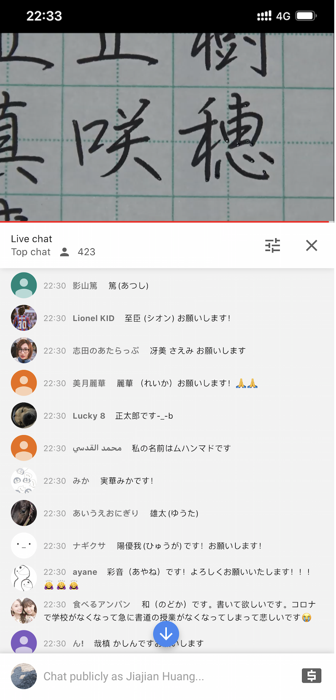
原来你还是改到了12点．比你早睡了．お疲れさまでした〜
前晚聊起高中的生活，今天又去翻了一下相册．大学以前的照片实在太少．我只是不想拍照．大概只有出现在别人的相框里的时候，才会没有所谓．不知道这种抗拒来自哪里，也不知道它为何而来，也不知道后来它为什么就消失了．可能我以前觉得拍照跟写日记是一回事，也可能不是这个原因，也可能是单纯的觉得自己丑，也可能是别的原因……我也不知道．但是，我好多次都问过自己，到底是什么原因才会不想通过这种方式来记下青春的往事，毫无负担的日子（相对现在）．想要得到一个明确的答案，但始终没有．我也不知道乐于拍照以后什么时候开始愿意露出牙齿，以前真的是拍什么照片都喜欢把嘴唇紧闭，正儿八经似的．人就这是样慢慢地变掉的．
往事：
- 一直到现在，只有每个数学老师的名字我依旧记得．其它科的，有些忘记了．
- 高三的时候数学老师是我一对一指导老师，对我充满期待的他在出成绩之后并没有失望．但我却不敢面对他．直到我上了大一服从分配之后又读了数学专业，我又回高中在窗外看他上课，在短暂的课间休息时间里的一番话，让我放下了曾经背负着的重担．
- 那数学老师跟我们说，不会就选A吧．
- 上大学之后第一次回家在小区楼下碰到高三时候的班主任，我们都叫她海棠姐．她说高考考化学睡着了，醒来发现试卷背后还有一面没做，最后还是去了北师大．经常拿这事来鄙视我们……
- 高三有一天托同学买了9个包当早餐．
- 高一时候是4号，高二的时候是3号，高三的时候是2号，大一的时候是1号．
- 高二开始，经常会在一家小食店买肠粉，然后还会给班里的同学打包．上了大学之后，很多次一下车就会先去那里吃个早餐，再回家．直到现在．那里的阿姨总会记得我和我的同学．那么多年了，我在那里还是只点这几样：猪肝肠和鱼片粥，视乎情况可能会多点一个瘦肉炒面．
- 高一某了语文课上有个女生因为我读了一首诗之后就跟我表白了．
- 高一的语文老师在高考之前，跟我谈了一次话，那时我就预感会辜负她．
- 高一的时候成绩是班里最好的，但总是偷偷打游戏到深夜．上语文课睡着总是被班主任批评……那也是我这辈子迟到频率最高的一段日子．
- 把吃晚饭的钱拿来买游戏点卡以后，每天放学都去同学家蹭饭吃．
- 高一的时候喜欢听一个电台节目，叫《一些事，一些情》．
- 高一的时候重新遇到去了别的初中的小学时候喜欢的女孩子，发现没有那么喜欢了．呵，小孩子的爱情．
- 考试的时候，如果监考老师是自己的老师，站在我旁边看的时候，通常会翻到会做的地方做，生怕她发现我不会……
- 以前我不喜欢写圆珠笔，因为有笔墨．后来不知道咋的发现换了书写方式就不会有了，于是就喜欢上了圆珠笔．每次都去同一家店一盒一盒地买．
- 那么多年基本上都坐最后一排，实在喜欢后面没有人独占一块地的地主体验．
- 中考区里前60名不用交高中学费，而我考了66名．语文老师跟我说有点可惜．
- 第66名的成绩足以去佛山一中，但因为不想住宿结果没有去．3年后高考考砸了想去复读，出成绩的那个下午去佛山一中溜了一圈，又是免学费．第二天还是决定不去了．
- 初三的语文老师要求我们用粤语背诵古文，说这样不容易写错别字．
- 初三的时候喜欢拿笔戳前面女生的背……
- 初二物理竞赛培训的时候，喜欢在课上偷偷地看同学的漫画．
- 初二的物理老师是副校长，后来贪污被抓了．有次去医院探病，碰到他．
- 有个特殊癖好，放学的时候喜欢跟骑车先骑到同学家，再骑回自己家……好像天总是聊不完似的．
- 以前我以为语文老师才能当班主任．
- 以前不喜欢做笔记，所以会拜托同桌做……然后别人都觉得我和她有暧昧，但她爸是校长．
- 小时候体质不怎样的，军训什么的，总共晕倒过三次．
- 初一的时候演过一次话剧，是《项链》，那是第一次跳交谊舞．
- 初一的时候6点多就回到学校学习，结果自行车被翻过围墙进学校的小偷给偷走了．
- 现在回想，那时的刚毕业的班主任是我师姐．
- 六年级数学考试，同桌丢了一张纸条给我，然后我抬头一看看到数学老师正看着我．
- 小学五年级在玩具店偷了一台电子宠物机，被抓到了，哭着跟店主道了很久的歉，才放了我走．之后就再也不敢经过那间店．
- 放学的时候总喜欢在校门口卖蛋糕仔的阿姨里买一份再走．
- 儿童节的时候表演过人生第一支舞《香蕉船》．
- ……
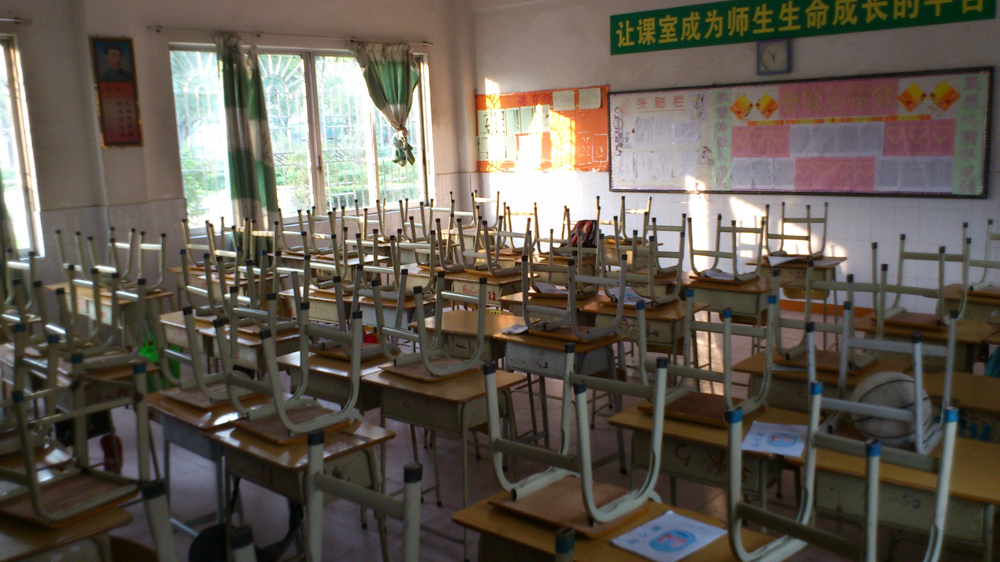
今天我有点自闭．
我曾经在非常安静的晚上想过，其实我知道自己配不上你．只有接受残破的自己，才是真正直面眼前的问题．我就这样的平凡，带着自己的固执走下去．不敢把喜欢挂嘴上，但眼里心里梦里的，又该如何诉说．要跑多快，才能追得上你．
我只是个普通人，我也会难过和失望．
我预见了所有悲伤，但我依然愿意前往．
— 《降临》
🙁10分钟都不给我……
所以啊，我其实没你想象中那么阳光…焦虑其实算是我的常态[Concerned][Concerned]只是程度不一，调节的时间不一…
哈哈，微信上我说过的就不再说了～没说的就在这里说．我想你看到．
你可能没有察觉，我没有想象过你很久了．我已经习惯了你的语言，你的文字以及你的情感．不知道你会不会有这样的感觉，反正我是会的．只要你不是刻意去欺骗我，从你的文字里就已经读得出你是怎样的一个人了．最初可能存在想象，甚至幻想，包括你的容貌，声线，性格，脾气，观点……时间长了就会发现根本不需要想象，你就是我眼前的这样一个你，这就是我喜欢的样子，伴随着时间它变得日渐清晰，直到我已经知道眼前的丽华是一个怎样的人．
😂当然，你也不忘打击一下我……如果结合前面所说的就会知道，有一天打败我的不是你父母的原则问题，也不是你的打击，而是我自己．
今天愚人节诶．（😂也是我认识你之后的第一个愚人节诶！）
😈昨晚我在想可以怎样捉弄一下你，不过想了一晚都没有想出来．后来又想了一下，😅愚人节好像不适合你的画风……而且，最近的你都要忙翻天，要是捉弄一下我怕不是要被打死……
时间也是过得飞快．正如上次跟你说的，以前开始，我就想每天都争取过得一点不一样．倒不是因为我快要死了……只是觉得，以前的以前为啥就没有这样的觉悟呢．大概以前的以前也就不知道自己为啥而活吧．算不上行尸走肉，也不是说过得像机器一样，我也不知道怎样形容那里的自己．硬是要说的话，大概就是缺少一分灵气．譬如当你发现自己目光在看着这个世界的时候不再那么明亮，譬如在大多数时候把将要说出来的话默默地选择咽回去，然后一笑置之，譬如身边人身边事让你的兴奋点变得越来越高……这种灵气就在慢慢地消失吧．不管几岁，离起跑线一直都是越来越远，生理上心理上，总有一天开始淡化着对这个世界的感知，变得迟钝．开一个愚人节玩笑，遇到喜欢的人大声表白，碰到不如意的事尽情哭泣，而不是在黑夜里独立忧伤，更主动地去留意身边人身边事的变化，时时去触摸这个世界，去听嘀嘀嗒嗒的雨声，去看地上闪动着树叶的影子，去听风与树叶摩擦的声音，去看水池里嘎嘎嘎地叫的鸭子，换一条路回家……（对，我就是这么的无聊）其实生活不是那么的无聊枯燥，也可以更有温度．
可是，现实总是残酷的多．😠譬如，我现在还没想到该怎样捉弄你．
前几天看你朋友圈的时候，还能看到在北海道领证书的那里，😢今天一刷就看不到了～
天气总是阴沉，但你可以是一道阳光．😘
今天看到这个，倒不是觉得说她有说得多有道理，而且也只是N个有好有差的回答正好出现在我的timeline里的，当然也不是说她没有道理．只是单纯好奇你会怎样想呢，虽然我们也 没到 不在这种阶段……
有点尴尬哈哈．仿佛我（有？曾经？）都擦到边了．
有时候我不往上面看（也很少往上面看），会偶尔会忘记自己做过什么蠢事（我所（能）做的确实很廉价）．那里面的，被你撩动过，拒绝过，分享过，逗乐过，躲避过，回避过……细想起来，中间事情还真不少（虽然再多也多不过聊天记录里的）．心里最大的触动总是不会忘记，想起来了，心情就会自然而然地代入．对我来说，说得悲观一点就是，这一切都在变着呢！有天你不会再察觉我的喜欢，有天你会不再习惯我的存在，有天你也会不再需要我的存在（或许本来就不需要）……我喜欢的心情，大概也像服从正态分布随机误差一样，在均值上下几个标准差里不时变化着，那些蠢事就是这几个标准差里上上下下的好好坏坏的印记．（我后来才发现，这个比较极其不恰当！因为随机误差的均值为0，而我的那个心情不是！）
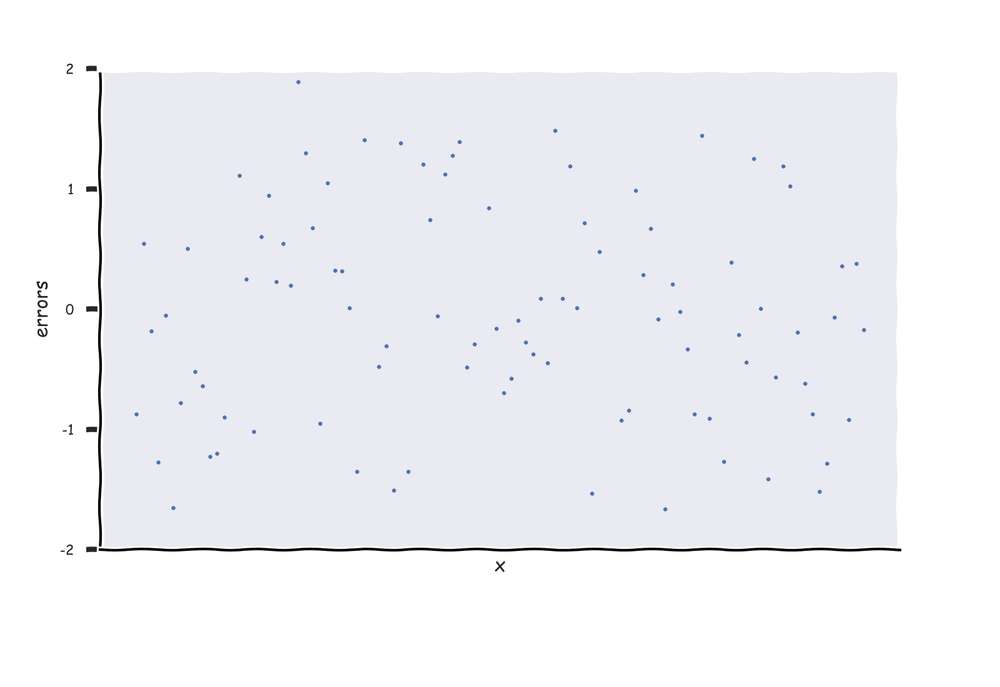
我以为是在表达自己的情感，或许别人看来就是证明自己．
就算这样，还是想跟你说晚安．
根据总字数与平均句长，目测今天又没机会和你说话了hah……😢又是漫长的一天．
清明节11点42分28秒，出了一点太阳了，不知道你有没有看到．

今天，要缅怀的，有很多．
晚安啦．
特别怀念能够随时给你发信息的日子．
特别怀念你什么都愿意跟我说的日子．
不知道你PPT做得怎样了，加油！阳光与我，都在等你．
现在是17点27分07秒，天气预报说29分之后会下雨．差不多到你运动的时候了吧，不过今天又不能跑步了诶．
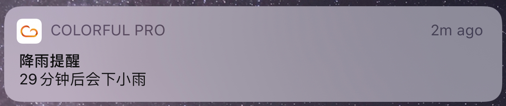
半夜下起了雨来，有时淅沥淅沥可以助眠，有时滴答滴答也会助长失眠．你这么易醒，不知道会不会被这雨声吵醒呢？